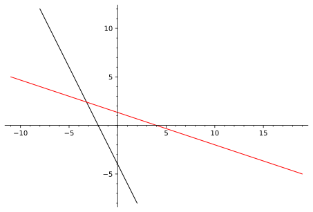

Lorsqu’on multiplie un vecteur par un scalaire, le vecteur garde la même direction. En observant l’extrémité du vecteur \(c\vec{u}\) lorsque \(c\) parcourt l’ensemble des nombres réels, on remarque qu’elle trace une droite. De même, si l’on a deux vecteurs non nuls et non parallèles \(\vec{u},\vec{v}\) et que l’on considère les vecteurs \(a\vec{u}+b\vec{v}\) lorsque \(a,b\in \R\text{,}\) on remarque que ces vecteurs se retrouvent toujours sur un plan.
Dans cette section, on introduit la notion de combinaison linéaire de vecteurs et on définit vectoriellement la notion de droite et de plan. On effectue aussi certains calculs, par exemple de distance, à l’aide des outils développés jusqu’à maintenant.
Sous-section1.3.1Les droites
Lorsque deux ou plusieurs vecteurs qui sont multipliés par un scalaire sont additionnés, on parle alors de combinaison linéaire.
Définition1.3.1.
Si l’on a \(n\) vecteurs \(\vec{u}_1,\vec{u}_2,\ldots , \vec{u}_n\text{,}\) une combinaison linéaire de ces vecteurs est s’écrit
\begin{equation*}
a_1\vec{u}_1+a_2\vec{u}_2+\cdots +a_n\vec{u}_n, \, \text{ où } a_i\in
\R \, \text{ pour tout } i=1,2,\ldots , n\text{.}
\end{equation*}
Les coefficients \(a_1,a_2,\ldots, a_n\) sont parfois appelés les poids de la combinaison linéaire.
La multiplication par un scalaire, un cas limite de combinaison linéaire, sera aussi considérée comme une combinaison linéaire d’un seul vecteur. À l’aide d’un certain nombre de vecteurs et des combinaisons linéaires, il est possible de générer (ou engendrer) d’autres vecteurs. Par exemple, un vecteur seul peut générer tout autre vecteur parallèle par la bonne combinaison linéaire, alors que deux vecteurs non parallèles de \(\R^2\) pourront engendrer n’importe quel vecteur de \(\R^2\text{.}\) La figure de l’exemple interactif 1.3.2 permet de comprendre ces exemples de manière intuitive, alors que les détails techniques seront abordés avec le concept de base d’un espace au chapitre [provisional cross-reference: chap-base].
Exemple1.3.2.Combinaison linéaire de deux vecteurs: dynamique.
Dans cet exemple, on considère, pour des vecteurs \(\vec{u},\vec{v}\) de \(\R^2\text{,}\) les combinaisons de la forme \(a\vec{u}\) et \(a\vec{u}+b\vec{v}\text{.}\) En se référant à la figure 1.3.3, sans toucher aux vecteurs de départ, on s’intéresse aux questions suivantes:
Au départ, les poids de la combinaison linéaire valent \(0\text{.}\) En laissant l’un des paramètres nul et en faisant varier l’autre, on observe que la combinaison linéaire n’est qu’une multiplication par un scalaire. Celle-ci se déplace sur une droite. Ceci est cohérent avec les observations faites lors de l’exemple 1.1.14.
En cliquant sur "grille" et en prenant des valeurs entières de \(a\) et \(b\text{,}\) on observe que les multiplications de \(\vec{u}\) et \(\vec{v}\text{,}\) respectivement par les scalaires \(a\) et \(b\text{,}\) se retrouvent aux intersections de la grille. Si, en plus, on fait afficher la combinaison linéaire, on peut voir géométriquement l’addition des vecteurs \(a\vec{u}\) et \(b\vec{v}\text{.}\)
On fixe une valeur de \(b\) quelconque, entière ou non et on laisse varier \(a\text{.}\) Qu’observe-t-on?
Est-il possible de décrire n’importe quel vecteur de \(\R^2\) comme une combinaison linéaire de \(\vec{u}\) et \(\vec{v}\) ? Cette question revient à dire, étant donné un vecteur \(\vec{w}=(w_1,w_2)\text{,}\) que l’on peut trouver des coefficients \(a,b\) tels que
Ce type de paires d’équations à résoudre est appelé un système d’équations linéaires et sera l’objet d’étude du chapitre 3.
Il est assez simple de voir intuitivement que, dès que deux vecteurs sont non parallèles dans \(\R^2\text{,}\) on peut écrire n’importe quel autre vecteur en fonction de ceux-ci. Un clic sur "Cible" fera apparaitre un point (plutôt qu’un vecteur, pour ne pas encombrer davantage la figure). À l’aide des curseurs, il devrait être possible de trouver une combinaison linéaire dont l’extrémité sera le point "Cible".
On observe ce qui se passe lorsque les vecteurs initiaux sont changés, en particulier si \(\vec{u}\) et \(\vec{v}\) sont parallèles.
Instructions.
Il est possible de déplacer les vecteurs \(\vec{u},\vec{v}\text{.}\) En cliquant sur "combinaison linéaire", on fait apparaitre le vecteur \(a\vec{u}+b\vec{v}\text{.}\) Les coefficients \(a\) et \(b\) peuvent être changés à l’aide des curseurs. On peut aussi afficher une grille suivant les multiples entiers des vecteurs \(\vec{u}\) et \(\vec{v}\text{.}\)
Figure1.3.3.Combinaison linéaire dans \(\R^2\)
Les observations de l’exemple 1.3.2 permettent de voir que les vecteurs et les droites sont des notions étroitement liées. On est tous et toutes capables de déterminer l’équation d’une droite, souvent de la forme \(y=ax+b\text{,}\) à l’aide d’informations comme deux points appartenant à la droite ou encore d’un point et de la pente. Pourquoi, alors, développer une théorie vectorielle pour un objet aussi bien connu?
La réponse à cette question se trouve en particulier dans \(\R^3\text{.}\) En effet, l’équation \(y=ax+b\) vue dans \(\R^3\) décrit non pas une droite, mais un plan (plus d’information sur les plans dans la sous-section 1.3.2). Pour comprendre cela, on rappelle qu’un point dans \(\R^3\) est composé d’une valeur \(x,y\) et \(z\text{.}\) Comme l’équation \(y=ax+b\) lie les variables \(x\) et \(y\text{,}\) mais laisse \(z\) libre, pour chaque couple \(x,y\) satisfaisant l’équation \(y=ax+b\text{,}\) il existe une infinité de valeurs \(z\) la satisfaisant aussi, d’où le plan plutôt que la droite. Une approche vectorielle permettra de décrire une droite dans \(\R^3\) et ainsi de surmonter cette difficulté.
Une droite passant par l’origine \(\mathcal{D}_0\text{,}\) dans \(\R^2\) ou \(\R^3\text{,}\) peut toujours être décrite comme l’ensemble des points \(P(x,y)\) ou \(P(x,y,z)\) atteints par la multiplication d’un certain vecteur \(\vec{v}\) par un scalaire réel. Le vecteur \(\vec{v}\) est appelé le vecteur directeur de la droite \(\mathcal{D}_0\text{.}\) On donne alors l’équation vectorielle de la droite comme étant l’ensemble des points \(P\) tels que
Évidemment, toute droite ne passe pas par l’origine. Si une droite \(\mathcal{D}\) ne passant pas par l’origine passe par un point \(A\) quelconque, mais est parallèle à une droite \(\mathcal{D}_0\text{,}\) qui passe par l’origine, on peut obtenir une équation vectorielle pour \(\mathcal{D}\) en translatant les points de la droite \(\mathcal{D}_0\) le long du vecteur \(\vecl{OA}\text{.}\) On obtient alors l’équation
où \(\vec{v}\) est le vecteur directeur de la droite \(\mathcal{D}_0\text{.}\) Le vecteur directeur est l’équivalent de la pente \(a\) et le point \(A\) est l’équivalent de l’ordonnée à l’origine \(b\) dans l’équation \(y=ax+b\text{.}\)
Connaitre le vecteur directeur est un peu l’équivalent de connaitre la pente de la droite. Parfois, on connait deux points \(A,B\) et on veut trouver l’équation de la droite passant par ces points. On peut créer un vecteur directeur en déterminant le vecteur reliant \(A\) et \(B\text{.}\)
Exemple1.3.4.L’équation de droites.
Considérons le point \(A(3,-2)\) de \(\R^2\) et les points \(B(1,1,-2)\) et \(C(-3,2,1)\text{.}\) On cherche l’équation de la droite dans \(\R^2\) qui passe par le point \(A\) et qui a la même direction que la droite \(\mathcal{D}_0: \vecl{OP}=c (1,-5)\) et l’équation de la droite dans \(\R^3\) qui passe par \(B\) et \(C\text{.}\)
Solution1.
La première partie est assez simple, puisque toute l’information nous est donnée. On connait un point de la droite et la direction. L’équation est donc
Pour la seconde partie, on doit d’abord trouver un vecteur directeur pour la droite. Le vecteur \(\vecl{BC}=(-3,2,1)-(1,1,-2)=(-4,1,3)\) fera l’affaire. Pour un point, on a le choix entre \(B\) ou \(C\text{,}\) n’importe lequel fera l’affaire. On obtient finalement
Pour une droite dans \(\R^2\text{,}\) il n’y a qu’une seule paire de nombres \(a,b\in \R\) décrivant la droite sous la forme \(y=ax+b\text{.}\) Par contre, cette équation peut être multipliée par n’importe quelle constante \(c\neq 0\) et la nouvelle équation \(cy=cax+cb\) décrit toujours la même droite, sous une forme moins conventionnelle. L’équation vectorielle d’une droite n’est pas unique. En effet, n’importe quel point \(A\) sur la droite peut être utilisé comme point de départ et n’importe quel multiple non nul du vecteur directeur peut être utilisé. En fait, on devrait parler d’une équation vectorielle de la droite plutôt que de l’équation vectorielle, mais on accepte cet abus de langage.
Exemple1.3.5.L’équation vectorielle n’est pas unique.
On reprend l’équation de la droite dans \(\R^3\) de l’exemple 1.3.4
En utilisant le point \(C\) plutôt que le point \(B\) et un vecteur parallèle à \(\vecl{BC}=(-4,1,3)\text{,}\) disons en le multipliant par \(-2\text{,}\) on obtient une nouvelle représentation pour la droite \(\mathcal{D}_2\) :
On remarque l’utilisation du scalaire \(k\) plutôt que \(c\) afin d’évoquer la différence entre les deux équations. On aurait pu utiliser \(c\) également, en gardant en tête qu’une valeur de \(c\) dans la première représentation de la droite ne donnera pas nécessairement le même point que cette même valeur de \(c\) dans la nouvelle représentation.
Comment s’assurer que ces deux équations décrivent la même droite? Une manière simple est de partir de l’une des équations et de montrer que l’on peut arriver à l’autre par une suite de manipulations algébriques. Dans notre cas, on a
où \(k=\frac{c-1}{2}\text{.}\) Comme on peut faire les opérations dans l’ordre inverse, les deux représentations sont équivalentes.
On va maintenant s’intéresser à réconcilier la forme vectorielle d’une droite à la forme standard \(y=ax+b\text{,}\) pour les droites de \(\R^2\text{.}\)
Exemple1.3.6.De la forme standard à la forme vectorielle.
Considérons une droite dans \(\R^2\text{,}\) par exemple \(y=3x-4\text{.}\) Sous forme vectorielle, on cherche à exprimer l’ensemble de points \(P\) sur la droite. Ces points sont de la forme \((x,y)=(x,3x-4)\text{.}\) On peut décomposer cette forme afin d’obtenir la forme vectorielle.
On trouve donc une droite de vecteur directeur \((1,3)\) passant par le point \((0,-4)\text{.}\) On Remarque qu’en suivant cette démarche, la première composante du vecteur directeur sera toujours \(1\text{,}\) et la seconde correspondra à la pente de la droite.
Évidemment, ce n’est pas la seule forme valide pour décrire la droite vectoriellement.
Exemple1.3.7.De la forme vectorielle à la forme standard.
Considérons une droite dans \(\R^2\text{,}\) par exemple \(\vecl{OP}=c(3,2)+(2,-1)\text{.}\) On cherche la forme \(y=ax+b\) de cette droite. Plusieurs démarches sont possibles. On peut facilement trouver deux points en utilisant deux scalaires différents dans la forme vectorielle. Par la suite, la démarche usuelle mènera à l’équation de la droite.
On peut aussi y aller avec l’interprétation géométrique du vecteur directeur. Le vecteur \((3,2)\) correspond à un déplacement horizontal de \(3\) unités et un déplacement vertical de \(2\) unités. Ceci nous donne la pente \(a=\frac{2}{3}\text{.}\) Pour trouver l’ordonnée à l’origine, il suffit de mettre la première composante de la forme vectorielle à \(0\text{,}\) en prenant ici \(c=\frac{-2}{3}\text{.}\) On trouve alors l’ordonnée à l’origine \(b=-1-\frac{2}{3}*2=-\frac{7}{3}\text{.}\) La droite est donc aussi décrite par l’équation
En regardant de manière plus détaillée l’équation vectorielle d’une droite \(\mathcal{D}\text{,}\) plus particulièrement avec la notation verticale pour les vecteurs, on découvre une autre manière de décrire la droite, composante par composante.
Cette dernière manière de décrire la droite \(\mathcal{D}\) est appelée la forme paramétrique d’une droite, ou encore les équations paramétriques d’une droite. On y voit d’ailleurs que chaque composante \(x,y\) et \(z\) est en quelque sorte elle-même l’équation d’une droite, \(x=cv_1+a_1, y=cv_2+a_2\) et \(z=cv_3+a_3\text{.}\) La variable indépendante ici est \(c\) et chaque composante du vecteur \(\vec{v}\) est associée à la "pente", alors que les composantes du vecteur \(\vecl{OA}\) sont associées aux "ordonnées à l’origine".
Les équations paramétriques se généralisent à des courbes quelconques dans le plan ou l’espace. Ce sujet est exploré dans la section [provisional cross-reference: sec-upplvec].
On regarde une autre manipulation de l’équation d’une droite. Celle-ci ne sera valide que pour une droite dans \(\R^2\text{,}\) mais reste toutefois importante. On considère à nouveau les équations paramétriques d’une droite dans \(\R^2\) :
On va tenter d’éliminer le paramètre \(c\text{,}\) un peu comme on l’a fait à l’exemple 1.3.7. On utilsera cependant une autre méthode, qui sera en quelque sorte un avant-gout de la section 3.1. On multiplie les équations paramétriques par \(v_2\) pour la première et \(v_1\) pour la seconde afin d’obtenir
une forme semblable à la forme standard, mais plus générale. En effet, avec la forme \(y=ax+b\text{,}\) il est impossible de décrire une droite verticale, mais avec la forme \(ax+by=c\text{,}\) il suffit que \(b=0\) pour obtenir une droite verticale. On peut aller plus loin dans l’analyse. En posant \(\vec{n}=(a,b)=(-v_2,v_1)\text{,}\) il est possible de réécrire l’équation normale à l’aide du produit scalaire:
De cette dernière équation, on déduit que le vecteur \(\vec{n}\) est perpendiculaire au vecteur \(\vecl{AP}\text{.}\) Puisque \(A\) et \(P\) sont sur la droite, le vecteur \(\vecl{AP}\) est parallèle au vecteur directeur de la droite et donc, le vecteur \(\vec{n}\) est perpendiculaire à la droite elle-même. Pour cette raison, la forme \(ax+by=c\) est appelée l’équation normale de la droite \(\mathcal{D}\) et le vecteur \(\vec{n}\) est un vecteur normal.
Avant de voir pourquoi l’équation normale d’une droite n’est pas possible dans \(\R^3\text{,}\) on énonce une proposition intéressante découlant des calculs que l’on vient de faire.
Proposition1.3.8.Le vecteur perpendiculaire.
Soit \(\vec{v}=(v_1,v_2)\) un vecteur de \(\R^2\) non nul. Alors le vecteur \(\vec{v}_{\perp}=(-v_2,v_1)\) est perpendiculaire à \(\vec{v}\text{.}\)
Démonstration.
Il suffit de vérifier que l’on a bien \(\vec{v}\cdot \vec{v}_{\perp}=0\text{.}\) Algébriquement,
On remarque que la direction du vecteur normal \(\vec{n}\) est la seule qui soit perpendiculaire à la droite dans \(\R^2\text{.}\) Considérons maintenant une droite quelconque \(\mathcal{D}\) et un point \(A\) sur cette droite. Combien de droites perpendiculaires à \(\mathcal{D}\) et passant par \(A\) existe-t-il? Si la droite est dans \(\R^2\text{,}\) une seule droite satisfait ces conditions, mais si \(\mathcal{D}\) est dans \(\R^3\text{,}\) il y en a une infinité. La figure 1.3.9 permet de voir une droite bleue, ainsi que trois autres droites en rouge qui sont de directions différentes, mais perpendiculaires à la droite bleue.
Figure1.3.9.Des droites perpendiculaires
On termine avec des commandes Sage en lien avec la sous-section.
Calcul1.3.10.Les droites avec Sage.
Pour tracer une droite dans \(\R^2\) ou dans \(\R^3\text{,}\) deux options sont possibles. La première option est simple et nécessite deux points sur la droite. Il suffit alors d’utiliser la commande line.
Une autre option, plus flexible, utilise les équations paramétriques. Elle est plus flexible puisqu qu’elle permet de décrire des courbes quelconques comme celles explorées dans la section [provisional cross-reference: sec-upplvec]. La commande est parametric_plotou parametric_plot3d, selon le cas.
On illustre les deux droites solutions de l’exemple 1.3.4.
Les options habituelles de couleur, épaisseur, etc. sont aussi disponibles.
Si l’équation de la droite est donnée vectoriellement, il est aussi possible de la tracer avec la commande parametric_plotou son équivalent \(3D\text{.}\)
Sous-section1.3.2Les plans
Après avoir considéré la géométrie derrière les combinaisons linéaires d’un vecteur, on s’intéresse maintenant à la géométrie des combinaisons de deux vecteurs. Plus spécifiquement, deux vecteurs non nuls et non parallèles \(\vec{u}\) et \(\vec{v}\) engendrent un plan. Lorsque ces vecteurs se trouvent dans \(\R^2\text{,}\) on obtient l’ensemble du plan cartésien, tel qu’observé à l’exemple 1.3.2.
Dans \(\R^3\text{,}\) les combinaisons linéaires \(a\vec{u}+b\vec{v}\) génèrent un plan passant par l’origine lorsque \(a,b\) parcourent toutes les valeurs réelles possibles. Ceci est illustré à l’exemple 1.3.11.
Exemple1.3.11.Combinaison linéaire en trois dimensions: dynamique.
Cet exemple est semblable à l’exemple 1.3.2, mais avec des vecteurs \(\vec{u},\vec{v}\) de \(\R^3\text{.}\) Les combinaisons de la forme \(a\vec{u}\) et \(a\vec{u}+b\vec{v}\) sont étudiées en se référant à la figure 1.3.12 et aux questions suivantes:
Comme précédemment, les multiples d’un seul vecteur donnent une droite.
En cliquant sur "grille" et en prenant des valeurs entières de \(a\) et \(b\text{,}\) on observe que les multiplications par un scalaire respectives de \(\vec{u}\) et \(\vec{v}\) se retrouvent à une intersection de la grille. Si en plus on fait afficher la combinaison linéaire, on peut voir géométriquement l’addition des vecteurs \(a\vec{u}\) et \(b\vec{v}\text{.}\)
Est-il possible de décrire n’importe quel vecteur de \(\R^3\) comme une combinaison linéaire de \(\vec{u}\) et \(\vec{v}\text{?}\) Cette question revient à dire, étant donné un vecteur \(\vec{w}=(w_1,w_2,w_3)\text{,}\) peut-on trouver des coefficients \(a,b\) tels que
Cette fois-ci, on a trois équations, mais seulement deux inconnues. Si l’on ne se soucie pas de l’équation (1.3.9), on peut, probablement, trouver des valeurs de \(a,b\) qui vont satisfaire les équations (1.3.7) et (1.3.8). Ces valeurs ne vont pas forcément satisfaire l’autre équation. Les détails et cas possibles pouvant survenir seront traités au chapitre 3.
Un clic sur "Cibles" fera apparaitre deux points dans l’espace. L’un de ces points sera toujours atteignable par une combinaison linéaire appropriée de \(\vec{u}\) et \(\vec{v}\text{,}\) mais l’autre ne le sera probablement pas. Pourquoi?
Un clic sur "Plan" fera apparaitre l’ensemble des points qui sont atteignables par combinaison linéaire de \(\vec{u}\) et \(\vec{v}\text{.}\) Le point "Cible1" est sans doute à l’extérieur de ce plan et ne peut donc pas être atteint. Par contre, "Cible2" a été construit de façon à toujours être dans l’ensemble des combinaisons linéaires possibles.
Instructions.
Il est possible de déplacer les vecteurs \(\vec{u},\vec{v}\text{.}\) En cliquant sur "combinaison linéaire", on fait apparaitre le vecteur \(a\vec{u}+b\vec{v}\text{.}\) Les coefficients \(a\) et \(b\) peuvent être changés à l’aide des curseurs. On peut faire s’afficher une grille suivant les multiples entiers des vecteurs \(\vec{u}\) et \(\vec{v}\) et un plan donnant l’ensemble des combinaisons linéaires possibles.
Figure1.3.12.Combinaison linéaire dans \(\R^3\)
Un plan passant par l’origine \(\mathcal{P}_0\) dans \(\R^3\) peut être décrit comme le lieu géométrique des points \(P(x,y,z)\) pouvant être obtenus comme une combinaison linéaire de deux vecteurs non nuls et non parallèles \(\vec{u},\vec{v}\text{.}\) Ces deux vecteurs sont appelés des vecteurs directeurs du plan \(\mathcal{P}_0\text{.}\) On peut aussi décrire le plan par une équation vectorielle, soit
En principe, un plan dans \(\R^2\) est équivalent à tout \(\R^2\text{,}\) on se concentre donc davantage sur les plans dans \(\R^3\text{.}\)
Pour décrire un plan \(\mathcal{P}\) passant par un point \(A\) quelconque et de vecteurs directeurs \(\vec{u},\vec{v}\text{,}\) il est possible d’utiliser une approche semblable à celle utilisée pour les droites et de translater un plan passant par l’origine \(\mathcal{P}_0\text{,}\) lui aussi de vecteurs directeurs \(\vec{u},\vec{v}\text{,}\) le long du vecteur \(\vecl{OA}\text{.}\) La figure 1.3.13 illustre cette approche.
Figure1.3.13.Un plan dans \(\R^3\) passant par un point \(A\text{.}\)
Comme c’était le cas pour les droites, un plan peut avoir plusieurs équations vectorielles le décrivant, toutes équivalentes. On dira toutefois « l’équation » du plan plutôt qu’ « une équation », sachant que l’équation n’est pas unique.
Également, on peut aussi considérer l’équation vectorielle comme un ensemble d’équations paramétriques, comme pour les droites. À noter que deux paramètres sont nécessaires, représentant l’aspect bidimensionnel d’un plan.
Plus généralement, ce type d’équation est pratique pour décrire des surfaces dans l’espace, aussi explorées à la section [provisional cross-reference: sec-upplvec].
Lorsque trois points qui ne sont pas alignés sont donnés, on peut toujours trouver l’équation d’un plan passant par ces trois points.
Exemple1.3.14.L’équation d’un plan passant par trois points.
Soit \(A(7,1,0),B(5,0,1)\) et \(C(5,0,0)\) trois points de l’espace. On cherche une équation du plan \(\mathcal{P}\) passant par \(A,B\) et \(C\text{.}\)
Solution.
Pour décrire un plan vectoriellement, on a besoin d’un point et de deux vecteurs directeurs. L’ensemble des points sur la droite passant par \(A\) et \(B\) doit forcément faire partie du plan, tout comme l’ensemble des points sur la droite passant par \(A\) et \(C\text{.}\) En particulier, les vecteurs \(\vecl{AB}=(-2,-1,1)\) et \(\vecl{AC}=(-2,-1,0)\) peuvent être considérés comme des vecteurs directeurs du plan cherché. En prenant comme point particulier le point \(A\text{,}\) on obtient
Exemple1.3.15.Déterminer si un point est sur un plan.
Considérons le plan \(\mathcal{P}\) d’équation vectorielle \(\vecl{OP}=a(2,-1,3)+b(-1,0,2)+(1,2,3)\text{.}\) On cherche à savoir si les points \(A(-6,3,10)\) et \(B(10,1,-4)\) font partie du plan.
Solution1.
Pour savoir si le point \(A\) est dans le plan, il faut trouver \(a,b\) tels que
L’équation (1.3.13)donne immédiatement \(a=-1\text{,}\) et en remplaçant cette valeur dans les équations (1.3.12)et (1.3.14), on trouve \(b=5\text{.}\) Une vérification rapide montre qu’on a bel et bien \(\begin{pmatrix}-6\\3\\ 10 \end{pmatrix}=-\begin{pmatrix} 2\\ -1\\ 3\end{pmatrix}+5\begin{pmatrix}
-1\\ 0\\ 2\end{pmatrix}+\begin{pmatrix}1\\2\\3
\end{pmatrix}.\)
Solution2.
Pour savoir si le point \(B\) est dans le plan, il faut trouver \(a,b\) tels que
L’équation (1.3.16) donne immédiatement \(a=1\text{.}\) En remplaçant cette valeur dans les équations (1.3.15) et (1.3.17), on trouve une incohérence, puisque d’une part, l’équation (1.3.15) demande à ce que \(b=-7\) alors l’équation que (1.3.17) demanque que \(b=-5\text{.}\) Comme \(b\) ne peut être simultanément \(-7\) et \(-5\text{,}\) on conclut que le point \(B\) ne peut pas appartenir au plan \(\mathcal{P}\text{.}\)
On verra prochainement une autre manière de déterminer si un point appartient à un plan de \(\R^3\) et le chapitre 3 donnera une méthode structurée pour résoudre les systèmes d’équations comme ceux dans cet exemple.
Dans \(\R^2\text{,}\) il y a une seule direction perpendiculaire à une droite donnée alors que dans \(\R^3\text{,}\) il en existe une infinité. Pour un plan dans \(\R^3\text{,}\) il n’y a aussi qu’une seule direction perpendiculaire au plan. Comment peut-on la trouver? Avant de procéder, on démontre le résultat suivant.
Proposition1.3.16.Orthogonalité et combinaison linéaire.
Soit \(\vec{u},\vec{v}\) et \(\vec{w}\) tels que \(\vec{w}\) est perpendiculaire à la fois à \(\vec{u}\) et \(\vec{v}\text{.}\) Alors \(\vec{w}\) est perpendiculaire à toute combinaison linéaire de \(\vec{u}\) et \(\vec{v}\text{.}\)
Démonstration.
Soit \(\vec{r}=a\vec{u}+b\vec{v}\) une combinaison linéaire quelconque des vecteurs \(\vec{u}\) et \(\vec{v}\text{.}\) On doit montrer que \(\pscal{r}{w}=0\text{.}\) On a
\begin{align*}
\pscal{r}{w}&=(a\vec{u}+b\vec{v})\cdot \vec{w}
&&\\
&=a\vec{u}\cdot\vec{w}+b\vec{v}\cdot\vec{w} && \text{
par la propriété }
\knowl{./knowl/xref/li-propprodscal-dist.html}{\text{1.2.6:3}}\text{ de la proposition }
\knowl{./knowl/xref/prop-propprodscal.html}{\text{1.2.5}}\\
&=a*0+b*0 & & \text{ par hypothèse, } \vec{u} \text{
et } \vec{v} \text{ sont perpendiculaires à } \vec{w}\\
&=0\text{.}
\end{align*}
Ainsi, \(\vec{w}\) est perpendiculaire à toute combinaison linéaire des vecteurs \(\vec{u}\) et \(\vec{v}\text{.}\)
On illustre maintenant la méthode pour trouver la direction perpendiculaire au plan avec un exemple numérique. L’exemple 4.1.19 donnera la manière générale de déterminer cette direction.
Exemple1.3.17.L’équation d’une droite perpendiculaire à un plan.
On considère le plan d’équation \(\mathcal{P}: (x,y,z)=a(2,1,0)+b(1,0,-1)+(3,2,-1)\text{.}\) On cherche l’équation de la droite \(\mathcal{D}\) qui passe par le point \(A(3,2,-1)\) et qui est perpendiculaire au plan \(\mathcal{P}\text{.}\)
Solution.
Soit \(\vec{w}=(w_1,w_2,w_3)\text{,}\) un vecteur directeur de cette droite. Si l’on réussit à trouver \(\vec{w}\) perpendiculaire à \(\vec{u}=(2,1,0)\) et \(\vec{v}=(1,0,-1)\text{,}\) alors, selon la proposition 1.3.16, \(\vec{w}\) sera orthogonal à tous les vecteurs du plan. On doit avoir
On a par conséquent trois inconnues à déterminer et deux équations qui les relient. En réarrangeant les équations, on arrive à \(w_2=-2w_1\) et \(w_3=w_1\text{.}\) Le vecteur \(\vec{w}\) peut donc être exprimé comme \(\vec{w}=(w_1,w_2,w_3)=(w_1,-2w_1,w_1)\text{.}\) On met le facteur commun \(w_1\) en évidence pour obtenir \(\vec{w}=w_1(1,-2,1)\text{,}\) avec \(w_1\) un nombre réel quelconque. Peu importe la valeur de \(w_1\text{,}\) on obtient un multiple du vecteur \((1,-2,1)\text{.}\) On choisit donc ce vecteur (en posant \(w_1=1\)) comme étant la direction cherchée.
Puisque l’on cherchait l’équation de la droite passant par le point \((3,2,-1)\text{,}\) la réponse est
est appelée une équation normale d’un plan dans \(\R^3\text{.}\) On peut aussi la réécrire sous la forme \(\vec{n}\cdot\vecl{AP}=0\text{,}\) où \(\vec{n}=(a,b,c)\) est perpendiculaire à tous les vecteurs du plan. L’exemple 1.3.17 montre comment passer de l’équation vectorielle à l’équation normale. En effet, le vecteur directeur de la droite perpendiculaire au plan servira de vecteur normal \(\vec{n}\text{.}\) On a donc \(\vec{n}=(1,-2,1)\text{.}\) On peut calculer la valeur de la constante manquante en remplaçant dans l’équation n’importe quel point sur le plan. On utilise le point \((3,2,-1)\) puisqu’on sait qu’il s’y trouve. On y arrive ainsi:
Exemple1.3.18.De l’équation normale à l’équation vectorielle.
Soit l’équation \(3x+2y+z=4\) une équation normale d’un plan dans \(\R^3\text{.}\) On cherche une équation vectorielle décrivant ce plan.
Solution1.
Une première solution est d’isoler l’une des variables dans l’équation normale. Ici, on a par exemple \(z=4-3x-2y\text{.}\) Un point \((x,y,z)\) dans le plan doit satisfaire
Une autre option est de sélectionner trois points non alignés sur le plan et de créer des vecteurs directeurs à partir de ces points. On retrouve alors facilement l’équation vectorielle. Par exemple, si \(x=y=0\text{,}\) le point sur le plan doit avoir \(z=4\text{.}\) De même, si \(x=z=0\text{,}\) on a \(y=2\) et si \(y=z=0\text{,}\) on a \(x=\frac{4}{3}\text{.}\) Des points \(A(0,0,4),B(0,2,0)\) et \(C\left(\frac{4}{3},0,0\right)\text{,}\) on tire les vecteurs directeurs \(\vecl{AB}=(0,2,-4)\) et \(\vecl{AC}=\left(\frac{4}{3},0,-4\right)\text{.}\) Le plan peut donc être décrit par l’équation
Est-ce que les deux équations obtenues sont vraiment équivalentes?
Dans le dernier exemple, on a déterminé deux vecteurs directeurs à partir de trois points du plan. Dans la définition d’un plan, il faut que les vecteurs directeurs soient non parallèles. Peut-on alors penser que deux vecteurs formés à partir de trois points sont toujours non parallèles ?
Avec les équations normales, le contexte est très important afin d’interpréter correctement un objet donné. L’équation \(x+2y=3\) représente une droite dans \(\R^2\) et un plan dans \(\R^3\text{.}\) Il est donc primordial de spécifier l’espace dans lequel on se trouve si l’on travaille avec les équations normales.
On termine avec des commandes Sage en lien avec la sous-section.
Calcul1.3.19.Les plans avec Sage.
Pour tracer un plan dans \(\R^3\text{,}\) deux possibilités sont possibles. Pour la première, on peut utiliser l’équation normale et la commande implicit_plot3d. À remarquer l’utilisation de la double égalité ==, puisque le symbole = est réservé à l’assignation des variables.
On peut aussi utiliser les équations paramétriques. La commande est parametric_plot3d.
On illustre les deux plans des exemples 1.3.17et 1.3.18.
Les options habituelles de couleur, transparence, etc. sont aussi disponibles.
Si l’équation du plan est donnée vectoriellement, il est aussi possible de le tracer avec la commande parametric_plot3d.
Sous-section1.3.3Distances
Soit \(\mathcal{D}\) une droite quelconque, quelle est la distance entre la droite et un point quelconque? Si le point est sur la droite, cette distance vaut \(0\text{,}\) mais sinon, comment la calculer? Géométriquement, la distance est donnée par la longueur du segment de droite perpendiculaire à \(\mathcal{D}\) reliant le point \(P\) et un point \(Q\) sur la droite, au pied du segment perpendiculaire. Celui-ci est illustré à la figure 1.3.20. La longueur de ce segment correspond à la norme du vecteur \(\vecl{PQ}\text{,}\) qui lui, est obtenu à partir des vecteurs \(\vecl{AP}\) et de sa projection sur le vecteur directeur de la droite \(\mathcal{D}\text{.}\)
Instructions.
On peut déplacer le point \(P\text{,}\) dont on cherche la distance à la droite, ainsi que cette droite à l’aide des points \(A\) et \(B\text{.}\) Un clic sur le bouton fera apparaitre le vecteur de la projection orthogonale
Figure1.3.20.Distance entre un point et une droite
La distance entre un point \(P\) et une droite \(\mathcal{D}\) est donc donnée par la formule
où \(A\) est un point connu sur \(\mathcal{D}\) et \(\vec{v}\) est le vecteur directeur de la droite. À remarquer que la formule fonctionne que la droite soit dans \(\R^2\) ou \(\R^3\text{,}\) et que, si le point \(P\) est sur la droite, la formule donne \(0\text{,}\) car le vecteur \(\vecl{AP}_{\vec{v}}=\vecl{AP}\text{.}\)
Il est parfois utile de connaitre la position du point \(Q\text{,}\) soit le point sur la droite qui est le plus près du point externe \(P\text{.}\) Celui-ci peut être obtenu en ajoutant au vecteur \(\vecl{OA}\) le vecteur \(\vecl{AP}_{\vec{v}}\text{.}\)
On s’intéresse maintenant à la distance entre un point \(P\) et un plan \(\mathcal{P}\) dans \(\R^3\text{.}\) Encore une fois, si le point est sur le plan, la distance sera de \(0\) et si le point est à l’extérieur, la distance sera calculée en déterminant la longueur du segment de droite reliant \(P\) et un point \(Q\) de telle sorte que le vecteur \(\vecl{QP}\) soit perpendiculaire au plan. Si \(A\) est un point connu d’un plan \(\mathcal{P}\text{,}\) le vecteur \(\vecl{QP}\) correspond à la projection du vecteur \(\vecl{AP}\) sur le vecteur normal du plan. La figure 1.3.21 l’illustre bien.
Instructions.
On peut déplacer le point \(P\) dont on cherche la distance au plan, ainsi que ce plan à l’aide des points \(A\text{,}\)\(B\) et \(C\text{.}\) Le vecteur \(\vec{n}\) peut aussi être changé, mais sa base est fixée au point \(A\text{.}\) Un clic sur le premier bouton fera apparaitre le vecteur de la projection orthogonale dans une animation.
Figure1.3.21.Distance entre un point et un plan
La distance entre un point \(P\) et un plan \(\mathcal{P}\) est donc donnée par la formule
où \(A\) est un point connu sur le plan \(\mathcal{P}\) et \(\vec{n}\) est le vecteur normal du plan. À remarquer que la formule fonctionne si le point \(P\) est sur le plan, car le vecteur \(\vecl{AP}_{\vec{n}}=\vecl{0}\text{.}\)
Il est parfois utile de connaitre la position du point \(Q\text{,}\) soit le point sur le plan qui est le plus près du point externe \(P\text{.}\) Celui-ci peut être obtenu en soustrayant au vecteur \(\vecl{OP}\) le vecteur \(\vecl{AP}_{\vec{n}}\text{.}\)
Dans \(\R^3\text{,}\) il est également possible de calculer la distance entre une droite et un plan ou deux plans. Autant pour le calcul de la distance entre une droite et un plan que pour la distance entre deux plans, deux cas peuvent survenir: ils peuvent se croiser, auquel cas la distance sera nulle, ou ils peuvent être parallèles. Si deux plans sont parallèles, il suffit de prendre un point sur l’un d’entre eux et de calculer la distance point–plan. Si, par contre, une droite est parallèle au plan, il est important de prendre un point de la droite et de calculer la distance point-plan. L’exercice 1.3.4.10 explique pourquoi prendre un point sur le plan et faire la distance point-droite ne fonctionne généralement pas.
La question de la distance entre deux droites demande un peu plus de réflexion. Dans \(\R^2\text{,}\) deux droites sont soit parallèles, soit sécantes, mais dans \(\R^3\text{,}\) il existe une troisième option. Deux droites peuvent ne pas se croiser sans être parallèles. On dit alors qu’elles sont gauches. Pour déterminer la distance entre les deux droites, on doit trouver la distance entre deux plans parallèles contenant chacun l’une des droites. Ceci nécessite de déterminer un vecteur qui est perpendiculaire au vecteur directeur respectif de chaque droite. Les détails pour trouver ce vecteur sont donnés dans l’exemple 4.1.19. En attendant, la figure [provisional cross-reference: fig-distdg] illustre l’intuition derrière la méthode décrite ci-dessus.
Il n’y a pas de nouvelles commandes Sage, mais on illustre l’utilisation de Sage pour résoudre un exemple concret de calcul de distance.
Calcul1.3.22.La distance entre un point et une droite.
On considère l’équation \(\mathcal{D}: (x,y)=c(3,-2)+(-1,5)\) et le point \(P(5,10)\text{.}\) On cherche la distance entre \(P\) et \(\mathcal{D}\text{.}\)
On commence par illustrer la droite et le point pour avoir une image de la situation
Pour calculer la distance, on doit connaitre un point \(A\) de la droite et faire la projection du vecteur \(\vecl{AP}\) sur le vecteur directeur de la droite. On peut bonifier l’image précédente avec les vecteurs.
On calcule maintenant la projection et le vecteur \(\vecl{AP}_{\vec{v}}-\vecl{AP}\) et on ajoute ce dernier à la figure.
Enfin, on obtient la distance en calculant la longueur du vecteur \(\vecl{AP}_{\vec{v}}-\vecl{AP}\text{.}\)
Soit \(\vec{u}=(1,3)\) et \(\vec{v}=(-2,5)\text{.}\) Exprimer \(\vec{w}=(-21,25)\) comme une combinaison linéaire de \(\vec{u}\) et \(\vec{v}\text{.}\)
Réponse.
\(\vec{w}=-5\vec{u}+8\vec{v}\)
Solution.
On veut résoudre l’équation vectorielle: \(\vec{w}=a\vec{u}+b\vec{v}\text{.}\) On veut donc trouver les valeurs de \(a\) et \(b\text{.}\)
Considérer la droite d’équation vectorielle \(\mathcal{D}: (x,y)=c(1,-3)+(4,5)\text{,}\)\(c\in \R\text{.}\)
(a)
Parmi les points suivants, lesquels appartiennent à la droite? \(A(4,5)\text{,}\)\(B(1,-3)\text{,}\)\(C(5,2)\) et \(D(0,17)\)
Indice.
On cherche à déterminer si chaque point est sur la droite. On rappelle que l’équation vectorielle consiste à décrire l’ensemble des points de la droite par un vecteur directeur et un point. On peut voir le point comme la valeur initiale ou le point de départ et le vecteur directeur multiplié par le scalaire comme le chemin parcouru sur la droite pour arriver à n’importe quel autre point. Il est important de ne pas confondre vecteur et point, car les deux sont simplement écrits entre parenthèses dans l’équation. Ici, \(\vec{v}=(1,3)\) est le vecteur directeur et \((4,5)\) est le point de départ.
Réponse.
Les points \(A\text{,}\)\(C\) et \(D\) sont sur la droite.
Trouver une équation standard de la droite passant par le point \(E(2,7)\) qui est parallèle à la droite \(\mathcal{D}\text{.}\)
Réponse.
\(\mathcal{D}_1:y=-3x+13\)
Solution.
L’équation normale est la plus proche de l’équation standard. Comme on cherche une droite parallèle à \(\mathcal{D}\text{,}\) elle aura le même vecteur normal. Ainsi, il ne reste qu’à remplacer \(x\) et \(y\) dans l’équation par les coordonnées du point \(E\text{.}\)
Pour obtenir une équation paramétrique (ou vectorielle), il faut d’abord un vecteur directeur. Puisqu’on cherche une droite perpendiculaire à \(\mathcal{D}\text{,}\) son vecteur directeur est donc donné par le vecteur normal \(\vec{n}=(3,1)\text{.}\) On sait que la droite passe par le point \(F(1,1)\text{.}\) On a:
Dans la proposition 1.3.8, on a introduit le vecteur perpendiculaire \(\vec{v}_{\perp}\text{.}\) Pour chacune des propositions suivantes, expliquer d’abord son sens géométrique et ensuite la démontrer algébriquement.
Instructions.
Figure1.3.23.
(a)
On obtient le vecteur \(\vec{v}_{\perp}\) à partir de \(\vec{v}\) en lui faisant faire une rotation de \(90\) degrés dans le sens antihoraire.
Solution.
Il y a seulement deux vecteurs perpendiculaires à un vecteur donné dans \(\R^2\text{.}\) Il faut alors simplement déterminer que la proposition 1.3.8 définit bien le vecteur obtenu à partir de \(\vec{v}\) en lui faisant faire une rotation de \(90\) degrés dans le sens antihoraire. On observe sur le dessin que c’est le cas. On pourra le démontrer algébriquement en considérant que si \(v_1\) et \(v_2\) sont positifs, alors \(\vec{v}\) sera dans le premier quadrant. Ainsi, \(\vec{v}_{\perp}=(-v_2, v_1)\) aura une valeur négative en \(x\) et positive en \(y\text{,}\) ce qui le place dans le deuxième quadrant. On voit que la rotation de \(90^\circ\) s’est effectuée dans le sens horaire.
(b)
\(\norm{\vec{v}}=\norm{\vec{v}_{\perp}}\)
Solution.
Dès qu’on accepte le résultat précédent, cette proposition est évidente géométriquement. Les deux vecteurs sont de même longueur. On le démontre algébriquement.
On observe géométriquement que ces vecteurs sont perpendiculaires. Cela revient à dire que leur produit scalaire est nul. On le démontre algébriquement.
L’angle entre deux droites est défini comme étant l’angle \(\theta\in\left[0,\frac{\pi}{2}\right]\) obtenu en calculant l’angle entre les vecteurs directeurs des droites, ou son supplémentaire si celui-ci excède \(\frac{\pi}{2}\text{.}\) Cet angle est défini même si les droites ne se croisent pas (parallèles ou gauches).
Calculer l’angle entre les droites \(\mathcal{D}_1: (x,y,z)=c(1,3,4)+(2,4,1)\) et \(\mathcal{D}_2: (x,y,z)=c(-1,2,-1)+(1,5,0)\)
On doit simplement calculer l’angle entre les vecteurs directeurs des droites, soit l’angle entre \(\vec{v}_1=(1,3,4)\) et \(\vec{v}_2=(-1,2,-1)\text{.}\) On utilise l’équation (1.2.2) pour faire ce calcul.
Puisque cet angle se trouve dans l’intervalle \(\left[0,\frac{\pi}{2}\right]\text{,}\) on n’a pas à calculer l’angle supplémentaire. C’est donc l’angle entre les deux droites.
5.
Soit \(\mathcal{D}\) une droite dans le plan dont le vecteur normal est \(\vec{n}\text{.}\) La droite sépare le plan en deux régions distinctes. On appelle le haut de la droite la région située dans le sens positif du vecteur normal et le bas la région dans le sens négatif du vecteur normal. La figure 1.3.24 illustre ce concept.
Instructions.
On peut déplacer la droite à l’aide du point \(A\) et du vecteur normal \(\vec{n}\text{.}\) On peut aussi déplacer le point \(P\text{.}\) Le texte change en fonction de la position du point \(P\) telle que définie ci-dessus.
Figure1.3.24.La droite de partage du plan
(a)
Soit \(A\) un point sur la droite et \(P\) un point quelconque du plan. Décrire une manière vectorielle qui détermine si le point est en haut ou en bas de la droite.
Indice.
Qu’ont de particulier les points sur la droite avec le vecteur normal?
Solution.
Il faut construire le vecteur \(\vecl{AP}\) et calculer l’angle entre ce dernier et le vecteur normal \(\vec{n}\text{.}\) Si cet angle est plus grand que \(90^\circ\) (angle obtu), alors le point \(P\) se situe en bas de la droite. Si l’angle est plus petit que \(90^\circ\) (angle aigu), alors le point \(P\) se situe en haut de la droite. Finalement, si l’angle est d’exactement \(90^\circ\text{,}\) alors le point \(P\) se situe sur la droite.
Une version simplifiée de cette démarche se dessine en remarquant que les angles aigus s’obtiennent à partir de vecteurs dont le produit scalaire est positif, les angles obtus, à partir d’un produit scalaire négatif, et finalement, comme on le sait déjà, les vecteurs perpendiculaires ont un produit scalaire nul.
(b)
Soit \(-2x+3y=3\) une droite et \(P(5,1)\) un point. Est-ce que le point est en haut ou en bas de la droite?
Réponse.
Le point \(P\) est en bas de la droite.
Solution.
On passera par la version simplifiée de la démarche, en utilisant seulement le signe du produit scalaire. On a besoin de trouver un point \(A\) quelconque sur la droite ainsi que le vecteur normal. Puisqu’on a déjà l’équation normale, le vecteur normal est: \(\vec{n}=(-2,3)\text{.}\) On trouve un point en posant \(x=0\) et en isolant \(y\text{.}\) Le point est donc \(A(0,1)\text{.}\) Ensuite, calculons le vecteur \(\vecl{AP}\text{.}\)
Puisqu’il est négatif, le point \(P\) est en bas de la droite.
(c)
Expliquer pourquoi, géométriquement, ce concept n’est pas possible avec une droite dans \(\R^3\text{.}\)
Solution.
La réponse courte est qu’il n’y a pas de vecteur normal pour une droite dans \(\R^3\text{.}\) La raison géométrique est qu’il existe une infinité de directions perpendiculaires à une droite dans l’espace en trois dimensions. On ne peut donc pas parler de "en haut" ou "en bas" de la droite. On pourrait cependant le faire avec un plan. Le point pourrait être sur la droite, mais il ne serait pas possible de déterminer que c’est le cas avec la méthode décrite plus haut, puisqu’il y a une infinité de directions perpendiculaires.
6.
Dans la démarche ayant mené à l’équation normale (1.3.6) d’une droite, \(ax+by=c\text{,}\) on pose \(c=aa_1+ba_2\text{.}\) Il semble donc que l’équation dépende du point \(A(a_1,a_2)\) connu. Montrer que ce n’est pas le cas et que, peu importe le point \(P(p_1,p_2)\) sur la droite, la quantité \(ap_1+bp_2\) est toujours égale à \(c\text{.}\)
Indice.
On remarque que la quantité \(ap_1+bp_2=\vec{n}\cdot \vecl{OP}\text{.}\) La figure ci-dessous peut être utile.
Instructions.
On peut déplacer la droite à l’aide du point \(A\) et du vecteur normal \(\vec{n}\text{.}\) On peut aussi déplacer le point \(P\text{.}\) Un clic sur « animation » fera apparaitre une décomposition du vecteur \(\vecl{AP}\) utile pour démontrer l’affirmation.
Figure1.3.25.L’équation d’une droite ne dépend pas du point
Solution.
Posons \(c=aa_1+ba_2=\vec{n}\cdot \vecl{OA}\text{.}\) On cherche à montrer que \(\vec{n}\cdot \vecl{OP}=c\) peu importe le point \(P\) sur la droite. Selon la figure 1.3.25 , le vecteur \(\vecl{OP}=\vecl{OA}+\vecl{AP}\) et le vecteur \(\vecl{AP}\) étant sur la droite, il est perpendiculaire à \(\vec{n}\text{.}\) On a donc
\begin{align*}
\vec{n}\cdot \vecl{OP}&=\vec{n}\cdot(\vecl{OA}+\vecl{AP})\\
&=\vec{n}\cdot \vecl{OA}+\vec{n}\cdot\vecl{AP}\\
&=\vec{n}\cdot \vecl{OA}+0 &&\text{ car } \vecl{AP} \text{ est perpendiculaire à } \vec{n}\\
&=c\text{.}
\end{align*}
Ainsi, l’équation de la droite ne dépend pas du point connu.
7.
Soit \(\vec{u}=(1,3,4)\) et \(\vec{v}=(-2,5,-1)\text{.}\)
(a)
Exprimer \(\vec{w}_1=(18,-1,37)\) comme une combinaison linéaire de \(\vec{u}\) et \(\vec{v}\text{.}\)
Réponse.
\(\vec{w}_1=8\vec{u}-5\vec{v}\)
Solution.
On cherche les valeurs de \(a\) et \(b\in\R\) telles que: \(\vec{w}_1=a\vec{u}+b\vec{v}\text{.}\)
On vérifie que cette combinaison fonctionne dans l’équation du milieu que l’on n’a pas utilisée: \(-1=3*8+5*(-5)\text{.}\) Bref, \(\vec{w}_1=8\vec{u}-5\vec{v}\text{.}\)
(b)
Est-ce que le vecteur \(\vec{w}_2=(-23,-7,11)\) peut s’écrire comme une combinaison linéaire de \(\vec{u}\) et \(\vec{v}\text{?}\)
Réponse.
Non, c’est impossible.
Solution.
On cherche les valeurs de \(a\) et \(b\in\R\) telles que: \(\vec{w}_2=a\vec{u}+b\vec{v}\text{.}\)
On vérifie si cette combinaison fonctionne dans l’équation du milieu que l’on n’a pas utilisée: \(3*\frac{45}{7}+5*\frac{143}{7}=\frac{850}{7}\neq-7\text{.}\) Bref, cette contradiction implique que \(\vec{w}_1\neq a\vec{u}+b\vec{v}\text{,}\)\(\forall a,b\in\R\) et il n’existe donc aucune combinaison linéaire permettant d’écrire \(\vec{w}_2\) comme une combinaison linéaire de \(\vec{u}\) et \(\vec{v}\text{.}\)
(c)
Géométriquement, quelle est la signification des résultats précédents?
Solution.
L’existence d’une combinaison linéaire permettant d’écrire un vecteur de \(\R^3\) à l’aide de deux autres vecteurs non parallèles signifie que le vecteur \(\vec{w}_1\) se situe dans le plan engendré par les vecteurs \(\vec{u}\) et \(\vec{v}\text{.}\)
L’absence d’une combinaison linéaire permettant d’écrire un vecteur de \(\R^3\) à l’aide de deux autres vecteurs non parallèles signifie que le vecteur \(\vec{w}_2\) se situe à l’extérieur du plan engendré par les vecteurs \(\vec{u}\) et \(\vec{v}\text{.}\)
8.
Le plan \(\mathcal{P}\) est donné par l’équation vectorielle
Bref, le vecteur \(\vec{w}=\left(4,\,-11,\,-3\right)\) n’est pas dans le plan.
(c)
Quelle est la différence géométrique entre les questions précédentes?
Solution.
Le point correspond à un endroit physique dans l’espace à trois dimensions par rapport à l’origine. S’il est possible d’atteindre le point, se déplaçant à partir du point de départ \((1,2,-1)\) en ajoutant une combinaison linéaire des deux vecteurs du plan, alors le point se trouve sur le plan.
Pour ce qui est du vecteur, il s’agit uniquement d’une orientation et d’une longueur. Si cette orientation est parallèle au plan, alors on dit que ce vecteur est dans le plan. Bref, il faut simplement que le vecteur \(\vec{w}\) puisse s’exprimer comme une combinaison linéaire des deux vecteurs directeurs du plan pour qu’il soit parallèle au plan et donc dans le plan.
9.
Considérer un plan quelconque d’équation vectorielle \(\vecl{OP}=a\vec{u}+b\vec{v}+\vecl{OA}\text{.}\) Considérer une droite d’équation vectorielle \(\vecl{OP}=k\vec{w}+\vecl{OB}\text{.}\)
(a)
Quelles sont les conditions sur \(\vec{w}\) et \(B\) pour que la droite soit dans le plan?
Solution.
Il faut à la fois que le vecteur \(\vec{w}\) soit dans le plan et que le point de départ \(B\) soit sur le plan. On a considéré ces deux problèmes à l’exercice 1.3.4.8.
(b)
Quelles sont les conditions sur \(\vec{w}\) et \(B\) pour que la droite soit parallèle au plan, mais à l’extérieur de celui-ci?
Solution.
Il faut que le vecteur \(\vec{w}\) soit dans le plan, mais que le point de départ \(B\) ne soit pas sur le plan.
(c)
Si l’équation du plan est donnée sous sa forme normale, \(ax+by+cz=d\text{,}\) quelles sont les conditions sur \(\vec{w}\) et \(B\) pour que la droite soit parallèle au plan?
Solution.
Il suffit d’utiliser le produit scalaire. En effet, si le produit scalaire du vecteur directeur de la droite (\(\vec{w}\)) et du vecteur normal du plan \(\vec{n}=(a,b,c)\) est nul, les deux vecteurs seront perpendiculaires. Ainsi, la droite sera parallèle au plan.
(d)
Comment déterminer si une droite intersecte un plan?
Solution.
Il y a plusieurs façons de faire.
D’abord, on pourrait utiliser la méthode longue, mais simple, qui consiste à tenter de trouver ce point d’intersection et de bien interpréter la solution. Pour ce faire, on doit résoudre l’équation :
Il faut donc trouver les valeurs de \(a\text{,}\)\(b\) et \(k\) qui la solutionnent. Avec cette résolution, on pourra arriver aux trois options classiques d’un système à trois équations et trois inconnues: aucune solution (pas d’intersection), solution unique (un point d’intersection) ou infinité de solutions (droite dans le plan).
Si le but est uniquement de déterminer si il y a une intersection, on peut se servir de ce qu’on a vu précédemment. En effet, une droite quelconque aura presque toujours une ou une infinité d’intersections avec un plan quelconque, sauf si ce plan est parallèle à la droite, sans toutefois la contenir. On peut donc savoir qu’il existe une intersection sauf si le vecteur \(\vec{w}\) est dans le plan et que le point de départ \(B\) n’est pas sur le plan.
10.
Dans le texte, il est dit que, pour calculer la distance entre une droite et un plan qui sont parallèles, il suffit de faire la distance entre un point quelconque de la droite et le plan.
(a)
Expliquer géométriquement pourquoi cette manière de procéder fonctionne.
Solution.
La réponse à cette question est la suivante: puisque la droite est parallèle au plan, tous les points de la droite sont à la même distance du plan. On déduit que la distance point–plan donnera la même valeur que la distance droite–plan, peu importe le choix du point sur la droite.
(b)
Expliquer, à l’aide de la figure 1.3.26, pourquoi procéder en calculant la distance entre un point du plan et la droite ne fonctionne généralement pas.
Instructions.
On peut déplacer le point \(P\) sur le plan. Que se passe-t-il avec la distance entre le point et la droite?
Figure1.3.26.La distance entre un plan et une droite parallèles
Solution.
Puisqu’en général, le point choisi sur le plan ne sera pas le plus près possible de la droite, on le voit assez bien sur la figure, on obtiendra alors une valeur de distance plus élevée que la vraie distance entre la droite et le plan.
(c)
Quels sont les cas où, par un pur hasard, la distance point–droite fonctionnerait?
Indice.
Considérer la figure interactive suivante:
Instructions.
Un clic sur le texte permet de faire apparaitre la projection de la droite sur le plan.
Figure1.3.27.La projection d’une droite sur un plan parallèle
Solution.
Il faudrait que le point choisi sur le plan soit le plus proche possible de la droite. Cela correspond à tous les points qui sont sur la projection de la droite sur le plan tel qu’illustré dans la figure.
(d)
Vérifier que la droite d’équation \(\mathcal{D}: (x,y,z)=k(1,-1,1)+(2,4,5)\) est parallèle au plan \(\mathcal{P}: 3x+2y-z=3\text{.}\) Quelle est la distance entre la droite et le plan?
Réponse.
La distance est de \(\frac{3}{7}\sqrt{14}\approx 1.6036\text{.}\)
Solution.
Pour faire cette vérification, on peut simplement calculer le produit scalaire entre le vecteur directeur de la droite et le vecteur normal du plan. Si ce produit donne zéro, alors on saura que ces vecteurs sont perpendiculaires et que la droite est parallèle au plan. On a le vecteur directeur \(\vec{v}=(1,-1,1)\) et le vecteur normal est donné par les coefficients de l’équation normale de la droite: \(\vec{n}=(3,2,-1)\text{.}\)
Les vecteurs sont donc perpendiculaires et la droite et le plan sont parallèles.
On obtient cette distance en calculant la distance point-plan (1.3.20) entre le point \(P(2,4,5)\) sur la droite et le plan. On a besoin du vecteur normal du plan \(\vec{n}=(3,2,-1)\) et d’un point quelconque du plan. On en choisit un qui est simple et qui fonctionne dans l’équation, par exemple le point \(A(1,0,0)\text{.}\)
Pour qu’un vecteur soit dans le plan, il doit être exprimable comme une combinaison linéaire des vecteurs directeurs \(\vec{u}\) et \(\vec{v}\text{.}\) On sait donc qu’il existe des valeurs \(a, b\in\R\) telles que \(\vec{w}=a\vec{u}+b\vec{v}\text{.}\) Aussi, lorsqu’on écrit le vecteur \(\vec{w}\) en termes de ses projections sur les vecteurs \(\vec{u}\) et \(\vec{v}\) perpendiculaires, on obtient cette combinaison linéaire directement. La preuve réside dans le fait qu’ils sont perpendiculaires. La projection orthogonale fournit déjà de quoi décomposer un vecteur en termes de \(\vec{u}\) et \(\vec{u}_{\perp}\text{.}\) On peut donc écrire:
Bref, la décomposition en termes des vecteurs \(\vec{u}\) et \(\vec{v}\) ne s’obtient pas par la projection orthogonale.
(c)
Soit \(\vec{n}\) un vecteur normal du plan et supposer à nouveau que les vecteurs \(\vec{u}\) et \(\vec{v}\) sont perpendiculaires. Montrer que pour tout vecteur \(\vec{t}\) dans \(\R^3\text{,}\) on a
Appliquer la partie (a) au vecteur \(\vec{t}-\vec{t}_{\vec{n}}\text{.}\)
Solution.
De façon semblable, on sait qu’on peut écrire le vecteur \(\vec{t}=(\vec{t}-\vec{t}_{\vec{n}})+\vec{t}_{\vec{n}}\text{.}\) On applique la partie (a) au vecteur entre parenthèses puisqu’il se trouve dans le plan. Ainsi, on aura:
\begin{align*}
(\vec{t}-\vec{t}_{\vec{n}})&=(\vec{t}-\vec{t}_{\vec{n}})_{\vec{u}}+(\vec{t}-\vec{t}_{\vec{n}})_{\vec{v}}\\
&=\vec{t}_{\vec{u}}-(\vec{t}_{\vec{n}})_{\vec{u}}+\vec{t}_{\vec{v}}-(\vec{t}_{\vec{n}})_{\vec{v}}\\
&=\vec{t}_{\vec{u}}-\vec{0}+\vec{t}_{\vec{v}}-\vec{0} \text{ (car ils sont perpendiculaires)}\\
&=\vec{t}_{\vec{u}}+\vec{t}_{\vec{v}}
\end{align*}
Par conséquent, en remplaçant dans l’équation précédente, on a:
Soit \(P(1,3)\) et \(\mathcal{D}: (x,y)=c(1,2)+(-1,1)\) un point et une droite dans \(\R^2\text{.}\) On cherche l’équation de l’ensemble des points qui sont à distance égale de \(P\) et \(\mathcal{D}\text{.}\) Il est bien connu que l’ensemble des points à distance égale d’un point et d’une droite forme une parabole.
Réponse.
\(x^2 + 4x y + 4y^2 - 22x - 24y = -41\)
Solution.
On doit simplement écrire dans une équation le calcul de la distance point–droite et point–point. En effet, tout point \(A(x,y)\) étant sur la parabole devra être à la même distance de la droite et du point fixe. On nommera \(Q(-1,1)\) le point de départ dans l’équation de la droite.
Soit \(\vec{u}\) et \(\vec{v}\) deux vecteurs de \(\R^2\) non parallèles et \(\vec{w}\) un autre vecteur de \(\R^2\) quelconque.
(a)
Montrer qu’il est toujours possible d’écrire \(\vec{w}\) comme une combinaison linéaire de \(\vec{u}\) et \(\vec{v}\text{.}\)
Solution.
On sait que \(\vec{u}=(u_1,u_2)\) et \(\vec{v}=(v_1,v_2)\) étant non parallèles, il n’existe pas de constante \(k \in \R\) telle que \(\vec{u}=k\vec{v} \Leftrightarrow (u_1,u_2)=k(v_1,v_2)\text{.}\) On cherche à montrer qu’il existe des constantes \(k_1, k_2 \in \R\) telles que \(\vec{w}=k_1\vec{u}+k_2\vec{v}\text{.}\) Si l’on réussit à isoler ces constantes et à toujours avoir des valeurs, peu importe les vecteurs, on aura fait la preuve.
On remarque que, puisqu’on a trouvé une expression pour \(k_1\) et \(k_2\) qui dépende de toutes les valeurs quelconques pour les vecteurs \(\vec{u}, \vec{v}\) et \(\vec{w}\text{,}\) on peut toujours trouver cette combinaison linéaire. La seule condition est que le dénominateur ne soit pas égal à zéro.
Cela sera toujours le cas en raison de l’hypothèse de départ que les vecteurs \(\vec{u}\) et \(\vec{v}\) ne sont pas parallèles. En effet, s’il n’existe pas de constante \(k \in \R\) telle que \((u_1,u_2)=k(v_1,v_2)\text{,}\) alors \(k=\frac{u_1}{v_1}\neq\frac{u_2}{v_2}\Leftrightarrow u_1v_2\neq u_2v_1\text{,}\) ce qui complète la preuve.
(b)
Montrer qu’il est possible d’avoir \(a\vec{u}+b\vec{v}+c\vec{w}=\vec{0}\) avec \(a,b,c\) pas tous égaux à \(0\text{.}\)
Solution.
On a obtenu qu’il existe des constantes \(k_1, k_2 \in \R\) telles que \(\vec{w}=k_1\vec{u}+k_2\vec{v}\text{.}\) Il suffit d’envoyer tous les vecteurs du même côté de l’égalité:
En posant \(a=-k_1\text{,}\)\(b=-k_2\) et \(c=1\text{,}\) on obtient aisément cette équation qui est tout à fait équivalente. On utilisera cette façon de faire au chapitre [provisional cross-reference: chap-base] pour montrer qu’un ensemble de vecteurs est linéairement dépendant.
Exercices Sage.
Les exercices qui suivent sont conçus pour être résolus avec Sage. Des cellules vides sont disponibles pour écrire les réponses. Évidemment, il y a plusieurs manières d’arriver aux réponses.
14.
Tracer les droites \(\mathcal{D_1}: \vecl{OP}=a(-1,2)+(-3,2)\) et \(\mathcal{D_2}: \vecl{OP}=a(3,-1)+(4,0)\) sur un même graphique, respectivement en noir et en rouge.
Réponse.

Figure1.3.28.Deux droites tracées à partir de leur équation vectorielle.
Pour trouver le vecteur normal \(\vec{n}\text{,}\) il faut résoudre simultanément les équations \(\vec{u}\cdot\vec{n}=0\) et \(\vec{v}\cdot\vec{n}=0\text{.}\) Le code suivant permet d’obtenir une solution.
u=vector([-1,2,1]) #le premier vecteur directeur
v=vector([-5,4,-3]) #le second vecteur directeur
var("a","b","c")
n=vector([a,b,c]) #le vecteur normal
eq1=u*n==0 #le vecteur normal doit être perpendiculaire à u
eq2=v*n==0 #le vecteur normal doit être perpendiculaire à v
sol=solve([eq1,eq2],a,b,c,solution_dict=True) #on résout les équations en fonction des composantes du vecteur normal. L'option solution_dict permet de coder différement les entrées de sol
sol
Bloc de code1.3.30.Le code pour le vecteur normal, partie 1
À remarquer qu’il y a une infinité de solutions, données sous forme paramétrique ici. Ceci est attendu étant donné que n’importe quel multiple d’un vecteur normal est aussi un vecteur normal. Dans ce cas-ci, si l’on prend la variable libre comme étant égale à \(3\) (pour éliminer les fractions), on obtient
n=vector([sol[0][a],sol[0][b],sol[0][c]]) #on extrait de la liste de solutions sol les expressions voulues
libre=sol[0][a].variables()[0] #On va chercher le nom de la variable libre. Ceci est nécessaire au cas où des exécutions multiples sont effectuées
n=n.subs({libre:3}) #on pose la variable libre à 3
n
Bloc de code1.3.31.Le code pour le vecteur normal, partie 2
Finalement, on obtient l’équation normale \(\vec{n}\cdot (x-6,y-3,z-2)=0\) ce qui donne
var("x","y","z")
show(n*vector([x-6,y-3,z-2])==0)
Bloc de code1.3.32.Le code pour l’équation normale
La distance est obtenue à l’aide de la formule \(\|\vecl{AP}_{\vec{n}}\|\text{:}\)
OA=vector([6,3,2]) #un point connu sur le plan
OP=vector([3,-4,2]) #le point extérieur au plan
AP=OP-OA
APsurn=AP*n/(n*n)*n #calcul de la projection
show(norm(APsurn))
Bloc de code1.3.33.Le code pour la distance point plan
Le point \(Q\) est donné par la formule \(\vecl{OQ}=\vecl{OP}-\vecl{AP}_{\vec{n}}\text{.}\) On obtient alors:
OQ=OP-APsurn
show(OQ)
Bloc de code1.3.34.Les coordonnées du points \(Q\)
Pour illustrer le plan, le point \(P\) et le vecteur \(\vecl{AP}_{\vec{n}}\text{,}\) on utilise:
Bloc de code1.3.35.Le code de la représentation graphique
16.Automatisation de l’équation d’une parabole.
Dans l’exercice 1.3.4.12, on a déterminé une équation implicite d’une parabole à distance égale d’un point \(F\) et d’une droite \(\mathcal{D}\text{.}\) Le but de cet exercice est de créer un programme qui, étant donné les coordonnées d’un point \(F\text{,}\) d’un point \(A\) et d’un vecteur \(\vec{v}\text{,}\) déterminera l’équation de la parabole de foyer \(F\) et de droite directrice \(c\vec{v}+\vecl{OA}\text{.}\) À Finir (Tracer graphique, tester avec celle de l’exercice)